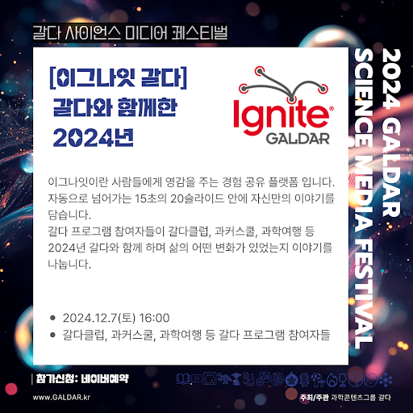

경험을 나누고, 영감을 만나다
이그나잇은 각자의 경험을 짧은 발표로 나누는 형식입니다. 15초마다 자동으로 넘어가는 슬라이드 20장에 자신의 이야기를 담습니다.
갈다클럽과 과학 커뮤니케이션 스쿨, 과학여행 등 갈다의 프로그램에 참여했던 사람들이 모여, 2024년 갈다와 함께하며 경험한 삶의 변화에 대해 이야기했습니다.
행사 안내
2024년 12월 7일 토요일 오후 4시에 진행된 ‘이그나잇 갈다’의 기록입니다.
원본 행사 안내 보기